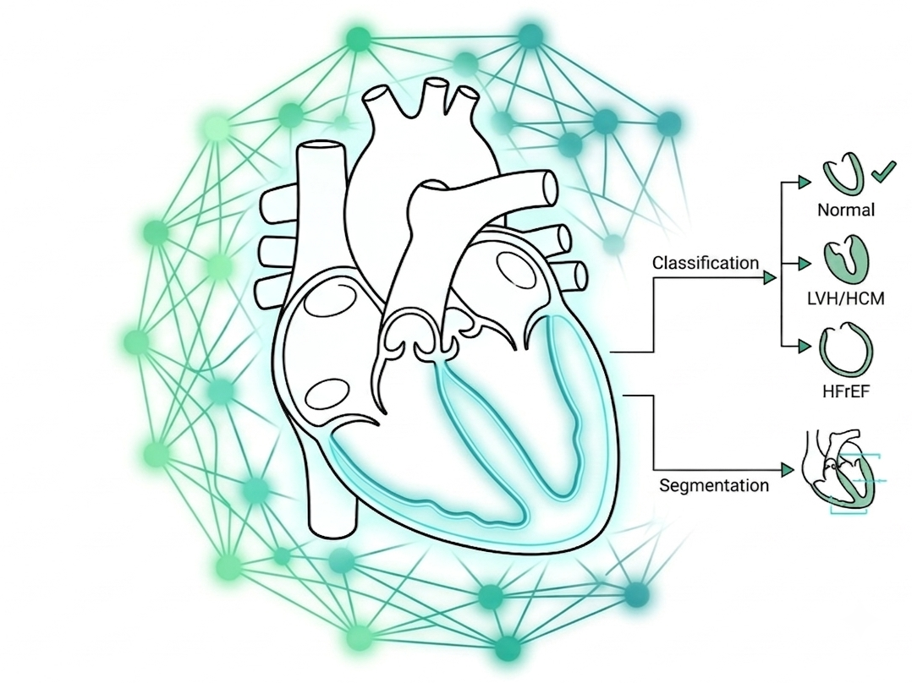
Combined Deep Learning Pipeline for Fully Automatic Classification and Segmentation of the Left Ventricle in Echocardiography
| Students |
Hadj-bouziane Fethellah Biomedical & Hospital Informatics Kartali Soheib Biomedical & Hospital Informatics |
| Jury Members |
Mr. Boukli Hacene Ismail President Mss. Belarouci Sara Examinator Mr. Gaouar Adil Supervisor Mr. Meziane Abdelfettah Co-Supervisor |
Scan to access additional resources
Presentation Structure
- Introduction & Research Objectives
- Data Processing & Harmonization
- Proposed Hybrid Architecture
- Training Strategy & Evaluation
- Clinical Application
- Conclusion, Limitations & Future Work
Introduction and Motivation
Cardiovascular AI for echocardiographic analysis
Normal
Healthy left ventricular function
HFrEF
Heart Failure with Reduced Ejection Fraction (EF ≤ 40%)
LVH / HCM
Left Ventricular Hypertrophy / Hypertrophic Cardiomyopathy (IVSd > 1.1 cm)
- Cardiovascular diseases are the leading cause of death worldwide — WHO reports 17.9 million deaths per year.
- Echocardiography (cardiac ultrasound) is the primary non-invasive imaging tool for diagnosing left ventricular conditions.
- Manual analysis is time-consuming, operator-dependent, and produces significant inter-observer variability.
- Three cardiac conditions are targeted: Normal, HFrEF, and LVH/HCM.
- These three conditions are encountered daily in Algerian cardiology departments, including CHU Oran.
- Our proprietary dataset, Echo3C, was curated using clinical data from CHU Oran.
- Automated deep learning analysis can accelerate diagnosis, reduce human error, and provide explainable clinical reports.
Problem Statement and Research Questions
Core Research Questions
- How can a single deep learning pipeline simultaneously classify a cardiac condition (3 classes) AND precisely segment the left ventricle from 2D echocardiographic frames?
- Can competitive performance be achieved using ImageNet-pretrained backbones fine-tuned on heterogeneous echocardiographic data, without domain-specific medical pretraining?
- Which architecture — transformer-based or convolutional — generalizes more effectively across three heterogeneous datasets?
Our contributions
1. Unified Classification
A unified three-class classification framework trained on EchoNet-Dynamic, EchoNet-LVH, and CAMUS simultaneously.
2. Simultaneous Segmentation
Simultaneous LV Cavity and LV Wall segmentation with a transformer-encoder UNet++ using a three-class unified decoder.
3. XAI Explainability
A complete XAI explainability analysis (Grad-CAM++ and Attention Rollout) for all six classifiers.
4. LV-DeepSeg Application
A clinical desktop application with integrated LLM report generation via the Anthropic Claude API.
Dataset Sources — Overview
| Dataset | Source | Format | Content | Scale | Labels Used | Task |
|---|---|---|---|---|---|---|
| EchoNet-Dynamic | Stanford University (public) | AVI video + FileList.csv + VolumeTracings.csv | Apical 4-chamber cine loops | 10,030 patients | EF value — Normal (EF ≥ 55%) or HFrEF (EF ≤ 40%). Grey zone 40–54% excluded. | Classification + Segmentation (LV Cavity only) |
| EchoNet-LVH | Stanford University (public) | AVI video + MeasurementsList.csv (Batch 1–4) | Parasternal long-axis views | ~12,000 labeled frames extracted | IVSd > 1.1 cm or LVPWd > 1.1 cm → LVH/HCM label | Classification only |
| CAMUS | CREATIS Lab, INSA Lyon (public) | NIfTI (.nii.gz) + official split TXT files | Apical 2CH and 4CH at ED and ES phases | 500 patients × 4 frames = 2,000 frames | Expert manual contours: BG=0, LV Cavity=1, LV Myocardium=2, LA=3 (remapped to 0) | Segmentation (LV Cavity + LV Wall) |
| Echo3C (Our) | Cardiology Dept., CHU Oran, Algeria | Digital echo images | Local clinical acquisitions | Used as independent validation set | Authorized by Prof. N. Laredj Ep. Abdelmalek on January 29, 2026 | Independent clinical validation |
- EchoNet-Dynamic grey zone (EF 40–54%) was excluded to avoid label ambiguity.
- EchoNet-LVH clinical thresholds follow ASE 2015 / ESC 2021 guidelines: IVSd > 1.1 cm and LVPWd > 1.1 cm.
- CAMUS LA labels (class 3) were remapped to background (class 0) — this study targets LV only.
- EchoNet-Dynamic has no LV wall annotation — a has_wall=False flag prevents wall loss from being computed on those samples.
Data Labeling Strategy and Clinical Thresholds
| Class | Dataset | Clinical Rule | Guideline |
|---|---|---|---|
| Normal | EchoNet-Dynamic | EF ≥ 55% — from FileList.csv EF column | ASE/ESC |
| HFrEF | EchoNet-Dynamic | EF ≤ 40% — grey zone 40–54% excluded entirely | ASE/ESC |
| LVH/HCM | EchoNet-LVH | IVSd > 1.1 cm OR LVPWd > 1.1 cm — from MeasurementsList.csv | ASE 2015 |
| BG/Cav/Wall | CAMUS | Expert NIfTI mask: 0=BG, 1=LV Cavity, 2=LV Myocardium, 3=LA (remapped to 0) | CREATIS annotations |
Label Leakage Discovery
- Initially, EF, IVSd, LVPWd, LVIDd were considered as clinical input features alongside images.
- Critical discovery: EchoNet-Dynamic samples have IVSd = -1 (not measured). EchoNet-LVH samples have IVSd > 0 (measured because they are LVH candidates). The IVSd value alone identifies the LVH/HCM class with near-100% accuracy.
- Decision: all clinical features were removed. The system is a pure IMAGE-ONLY classifier.
Data Normalization — Classification and Segmentation
Three datasets, three different visual environments
| Step | Operation | Applied To | Purpose |
|---|---|---|---|
| 1 | Frame extraction (ED + ES only) | EchoNet-Dynamic and LVH | Avoid near-duplicate frames and EF memorization |
| 2 | norm_u8() conversion | CAMUS NIfTI images | Convert single-channel float NIfTI to displayable range |
| 3 | Grayscale to RGB | CAMUS: cv2.COLOR_GRAY2RGB | All pretrained models expect 3-channel RGB input |
| 4 | resize_img() | All sources: 384×384 (seg) or 224×224 (clf) | Standardize spatial resolution |
| 5 | ImageNet Normalize | All sources | mean=[0.485, 0.456, 0.406], std=[0.229, 0.224, 0.225] |
| 6 | CLAHE enhancement | clip_limit=4.0, tile_grid_size=8×8, p=0.40 | Harmonize inter-scanner differences |
| 7 | Speckle noise simulation | Rayleigh noise: scale=0.07, p=0.30 | Simulate ultrasound speckle |
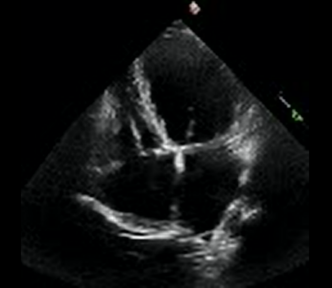
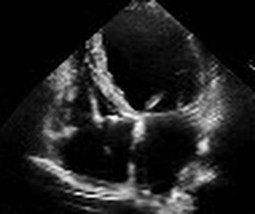
Data Preparation — Unified Environment
The harmonization pipeline
(a) Raw Clinical Input – Illustrating Data Heterogeneity
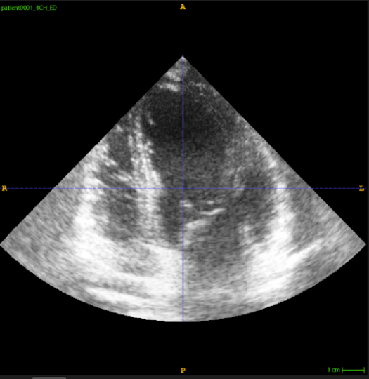
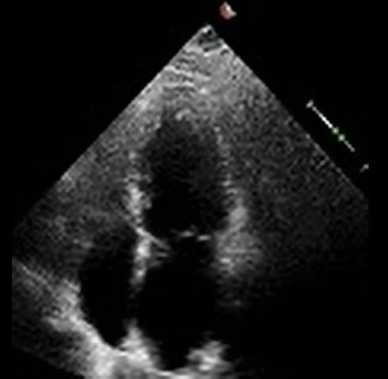
(b) Harmonized Output – Standardized Preprocessing Result
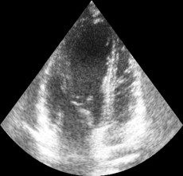
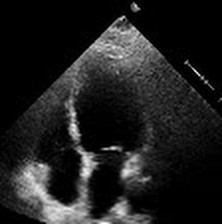
After harmonization, the model sees images that are visually comparable regardless of their source. The manifest CSV records the source field for each sample, but the training pipeline uses only the image content.
Manifest File and Dataset Split Strategy
Manifest CSV
Each row contains: file path, class label (0/1/2), patient_id, source dataset, split assignment (train/val/test), has_wall flag. Single source of truth for all training and evaluation scripts.
Classification Split (GroupShuffleSplit)
| Split | Proportion | Method | Seed |
|---|---|---|---|
| Test | 15% of total patients | GroupShuffleSplit — patient_id as group key | 42 |
| Validation | 15% of remaining 85% | GroupShuffleSplit — patient_id as group key | 42 |
| Train | Remaining ~72% | After test and val removal | 42 |
| Balancing | Up to 6,000 per class | Oversampling minority classes | 42 |
Segmentation Split (Official Benchmark)
- EchoNet-Dynamic: Uses the official FileList.csv split column from Stanford.
- CAMUS: Uses official split text files: subgroup_training.txt, subgroup_validation.txt, subgroup_testing.txt.
- Fallback: patient_splits() with seed=42 if official files not found.
Patient-Level Splitting
GroupShuffleSplit enforces strict patient-level boundaries. All frames from one patient go to exactly one split — preventing per-patient cardiac shape memorization.
Data Augmentation Pipeline
Critical for echocardiographic robustness
TRANSFORMS
CONTRAST
NOISE
Classification Models — Architecture Overview
Six architectures evaluated
| Model | Family | Transformer? | Pretrained | Backbone Freeze |
|---|---|---|---|---|
| Swin-Tiny (Our) | Hierarchical Vision Transformer | YES | ImageNet (timm) | Frozen 5 epochs then fully unfrozen |
| ConvNeXt-Small (Custom) | Modern CNN (transformer-inspired) | PARTIAL | ImageNet (timm) | Frozen 5 epochs then fully unfrozen |
| ResNet-50 (Custom) | Classic Residual CNN | NO | ImageNet (timm) | Frozen 5 epochs then fully unfrozen |
| EfficientNet-B4 (Custom) | Compound-scaled CNN | NO | ImageNet (timm) | Frozen 5 epochs then fully unfrozen |
| VGG-16 (Custom) | Deep Sequential CNN | NO | ImageNet (torchvision) | Fine-tuned from epoch 1 |
| Classic CNN (Custom) | Custom 5-Block Sequential CNN | NO | NONE — random init | No freeze |
Two-Phase Fine-Tuning (all timm models except Classic CNN)
Phase 1 (epochs 1–5): All backbone parameters frozen. Only classification head trained.
Phase 2 (epoch 6 onward): unfreeze_backbone() — entire network fine-tuned with LLRD (backbone LR = 0.10 × head LR).
Classic CNN — 5-Block Architecture with Batch Norm
Trained entirely from scratch — controlled baseline
| Block | Input Ch. | Output Ch. | Spatial Size | Dropout |
|---|---|---|---|---|
| Block 1 | 3 (RGB) | 32 | 224 → 112 px | Dropout2d p=0.20 |
| Block 2 | 32 | 64 | 112 → 56 px | Dropout2d p=0.25 |
| Block 3 | 64 | 128 | 56 → 28 px | Dropout2d p=0.30 |
| Block 4 | 128 | 256 | 28 → 14 px | Dropout2d p=0.30 |
| Block 5 | 256 | 512 | 14 → 4×4 adaptive | — |
| Head | 8192 | 3 classes | Flatten → Linear → BN → ReLU → Dropout | p=0.50 / 0.40 |
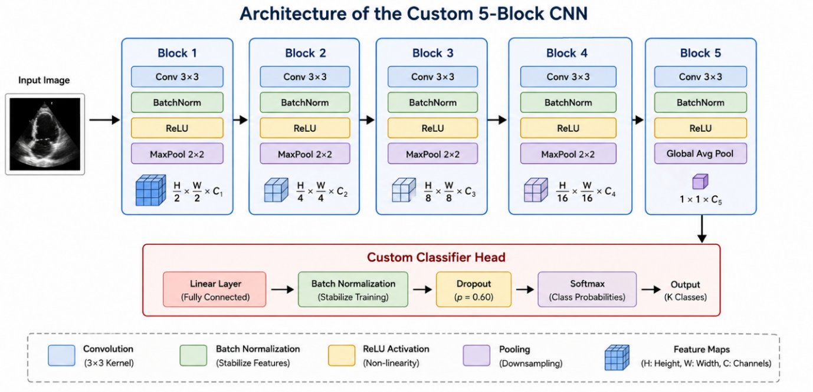
Classic CNN achieves 88.53% accuracy and ROC-AUC 0.9673 — remarkably competitive with ResNet-50 (0.9670).
Segmentation Models and Encoders
Four segmentation frameworks evaluated
| Model | Architecture | Encoder | Classes | Key Characteristic |
|---|---|---|---|---|
| UNet++ | Nested Dense Skip Connections | MiT-B3 (SegFormer) | 3: BG / LV Cavity / LV Wall | Selected as final best model |
| FPN | Feature Pyramid Network | MiT-B3 (SegFormer) | 3: BG / LV Cavity / LV Wall | Best checkpoint at epoch 2 |
| MANet | Multi-scale Attention Network | EfficientNet-B5 | 3: BG / LV Cavity / LV Wall | Lower LR (5e-5) and grad_clip=0.5 |
| MedSAM | SAM Adaptation | ViT-B (frozen, SA-1B) | 3: BG / LV Cavity / LV Wall | Near-zero LV Wall Dice (0.0002) at 53 epochs |
- UNet++ nested skip pathways progressively refine features before reaching the decoder — producing sharper LV boundaries.
- MiT-B3 transformer encoder provides global self-attention across the full image.
- MiT-B3 is INCOMPATIBLE with UNet++ skip connections in segmentation-models-pytorch — UNet++ ran with its default CNN encoder.
Justification for the UNet++ Hybrid Architecture
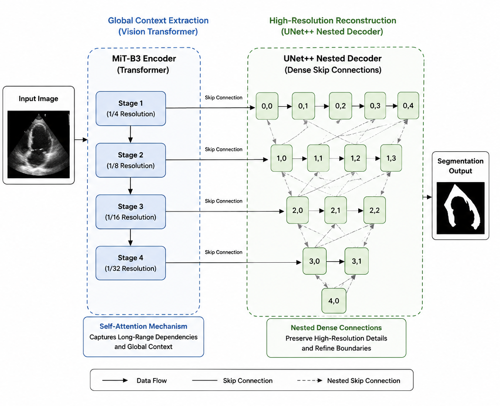
Architecture Additions — BN, Dropout, Two-Phase Freeze
Custom modifications to standard architectures
Custom Classifier Head
Linear → BatchNorm1d → ReLU → Dropout(0.60) → Linear → BatchNorm1d → ReLU → Dropout(0.48) → Linear(→3 classes)
Source-Aware Wall Masking
For EchoNet-Dynamic samples (has_wall=False): wall class contribution to Dice and CE loss set to zero.
8-fold Test-Time Augmentation
Segmentation only: 8 augmented predictions averaged at inference. NOT used for classification.
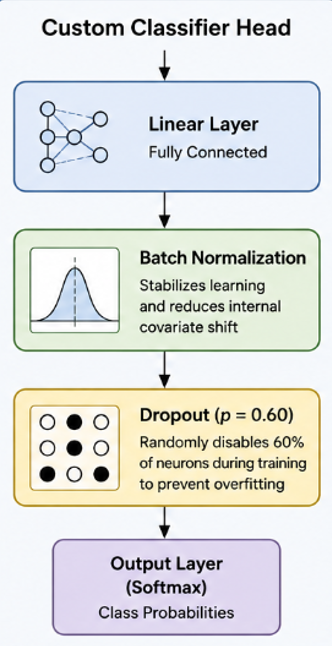
Loss Functions
Classification — Focal Loss with Label Smoothing
- Focal Loss: L_focal = (1 - p_t)^γ × CE(p, y), with γ=2.0
- Label smoothing: ε=0.05 (true class probability = 0.95)
- Class-weighted alpha: inversely proportional to class frequency
- Multi-stream loss: main logits × 1.0 + image auxiliary head × 0.35
Segmentation — Composite Three-Term Loss
| Loss Term | Weight | Purpose |
|---|---|---|
| SoftDiceLoss | 45% | Primary overlap metric — optimizes Dice score |
| TopKCELoss | 35% | Online Hard Example Mining — top 50% hardest pixels |
| BoundaryLoss | 20% | Penalizes errors at LV endocardial/epicardial borders |
Metrics and Overfitting Detection Strategy
Classification Metrics
Also: Log Loss, McNemar's Test, False Negative Reduction %, Decision Curve Analysis (DCA)
Overfitting Detection
- Primary signal: val_loss monitored with patience=18 (clf) / 20 (seg)
- Multi-signal monitoring: val_F1_macro and val_accuracy tracked alongside val_loss
- Visual detection: widening gap between training and validation loss curves
- Best checkpoint restoration: model from epoch with LOWEST validation loss restored
Segmentation Metrics
Dice Coefficient, IoU/Jaccard Index, Pixel Accuracy, Precision and Recall per structure
Classification Results — F1-Macro, DCA, PRC
Swin-Tiny achieves best performance across all metrics
| Model | Accuracy | F1-Macro | ROC-AUC | MCC | Log Loss |
|---|---|---|---|---|---|
| Swin-Tiny (best) | 92.36% | 0.9295 | 0.9827 | 0.8814 | 0.2431 |
| Classic-CNN | 88.53% | 0.8937 | 0.9673 | 0.8234 | 0.3769 |
| ConvNeXt-Small | 88.84% | 0.8961 | 0.9662 | 0.8268 | 0.3664 |
| ResNet-50 | 87.60% | 0.8860 | 0.9670 | 0.8083 | 0.3111 |
| VGG-16 | 87.82% | 0.8741 | 0.9512 | 0.8156 | 0.3812 |
| EfficientNet-B4 | 85.33% | 0.8666 | 0.9525 | 0.7768 | 0.3983 |
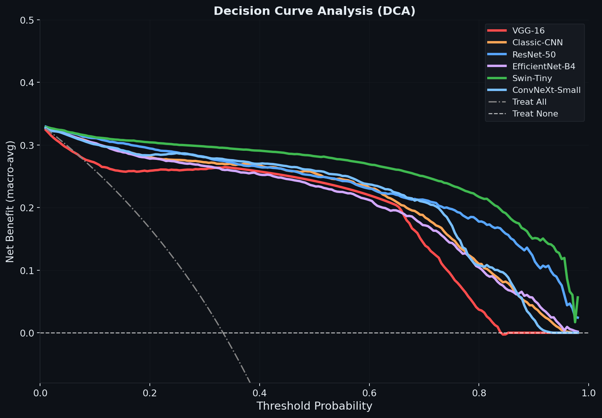
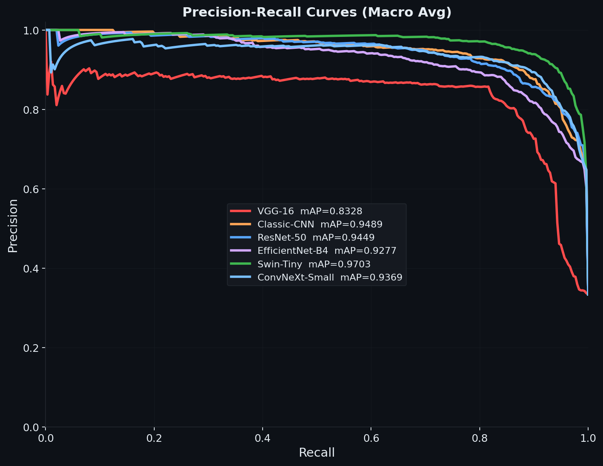
Swin-Tiny: F1-Macro 0.9295 • ROC-AUC 0.9827. Click any figure to view full screen.
Swin-Tiny Attention Rollout
Grad-CAM++ is incompatible with Swin-Tiny — Attention Rollout is the correct method
- Grad-CAM++ requires spatially structured convolutional feature maps. Swin-Tiny uses patch tokenization and window-partitioned self-attention.
- Attention Rollout: A_hat_L = (A_L + I) / 2, then Rollout = A_hat_1 × A_hat_2 × ... × A_hat_L
- The [CLS] token row gives spatial attention weights across all input patches.
- Central high-attention region (yellow) tracks the left ventricular cavity across all six tested frames.
- No corner bias or artefact-driven attention detected.
- Contrast: ResNet-50 and EfficientNet-B4 showed corner bias in activation maps.
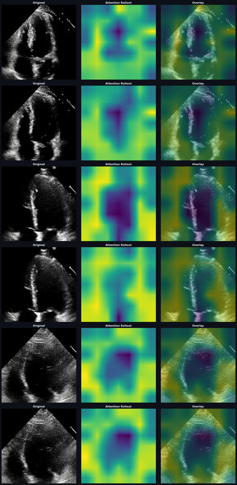
Segmentation Results — UNet++ Heatmap
| Model | Dice FG | Dice Cav | Dice Wall | IoU Cav | IoU Wall | Pixel Acc |
|---|---|---|---|---|---|---|
| UNet++ (best) | 0.9111 | 0.9439 | 0.8784 | 0.8937 | 0.7832 | 97.46% |
| FPN | 0.9098 | 0.9427 | 0.8769 | 0.8916 | 0.7809 | 97.45% |
| MANet | 0.8782 | 0.9251 | 0.8313 | 0.8606 | 0.7113 | 96.49% |
| MedSAM | 0.2623 | 0.5243 | 0.0002 | 0.3553 | 0.0001 | < 1% |
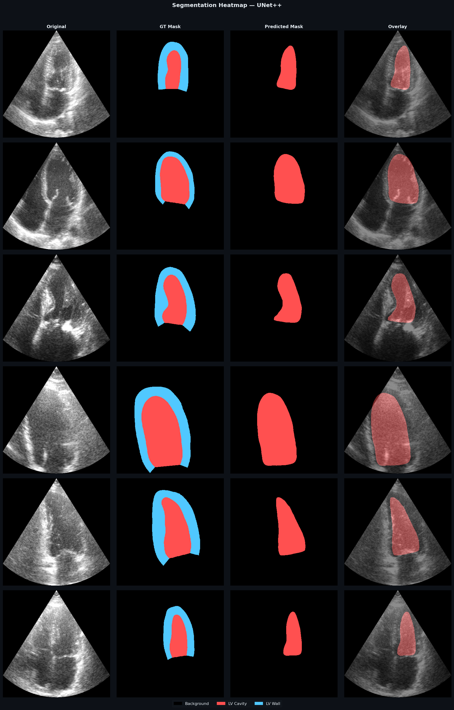
Click heatmap to view full screen.
Training Loss Curves — Swin-Tiny and UNet++
Swin-Tiny Classification
- Training and validation loss converge near 0.18–0.20
- Minimal gap — confirms good generalization without overfitting
- Early stopping at epoch 42 (patience=18)
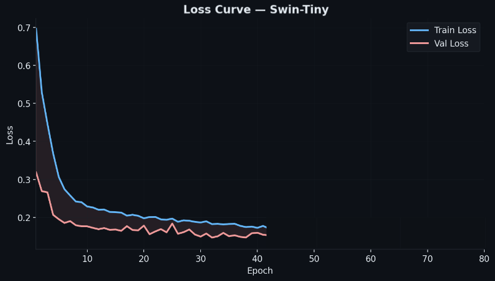
UNet++ Segmentation
- Best checkpoint at epoch 2 (LV Cavity IoU 0.7740, LV Wall IoU 0.4458)
- LV Wall validation IoU becomes unstable after first few epochs
- Instability consistent across all four segmentation models
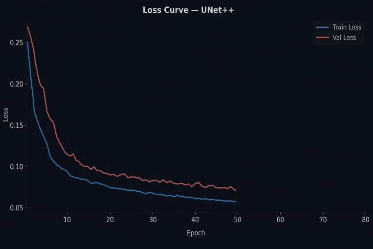
Confusion Matrices — Swin-Tiny and UNet++
Best-performing model from each task
Swin-Tiny Classification
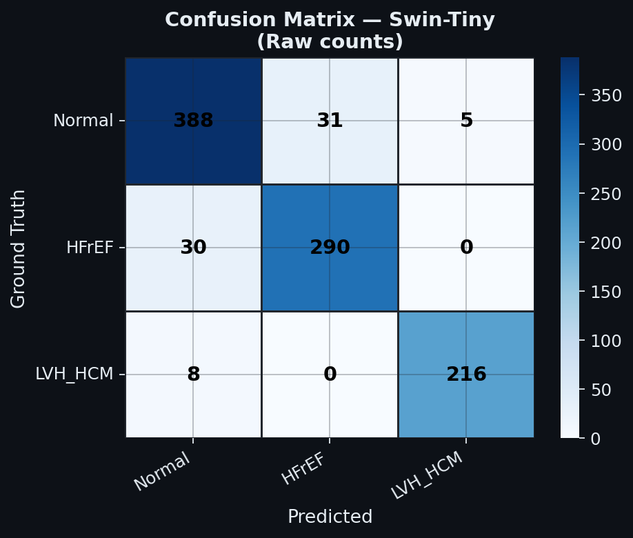
- Normal: 91.5% correctly classified (7.0% misclassified as HFrEF)
- HFrEF: 90.6% correctly classified
- LVH/HCM: 96.4% correctly classified — highest per-class recall
UNet++ Segmentation
LV Cavity: Precision=0.9418, Recall=0.9460
LV Wall: Precision=0.8825, Recall=0.8743
Wall recall slightly lower than precision — mild under-segmentation of thin wall in acoustically challenging frames.
Other Models (Summary)
- EfficientNet-B4: Highest Normal misclassification (21.9% toward HFrEF)
- VGG-16: Non-negligible Normal-LVH/HCM confusion (7.3%)
- Classic CNN: Textbook overfitting from epoch 10, but AUC 0.9673 at best checkpoint
LV-DeepSeg — Clinical Desktop Application
Complete clinical decision support tool with LLM report generation
Main Dashboard
Upload AVI, MP4, DICOM, PNG, JPG
Diagnostic Output
Condition, confidence, uncertainty
Segmentation Viewer
Colored LV boundary masks
Metrics Dashboard
Dice, IoU, AUC, F1, Kappa
LLM Report
Claude API or template fallback
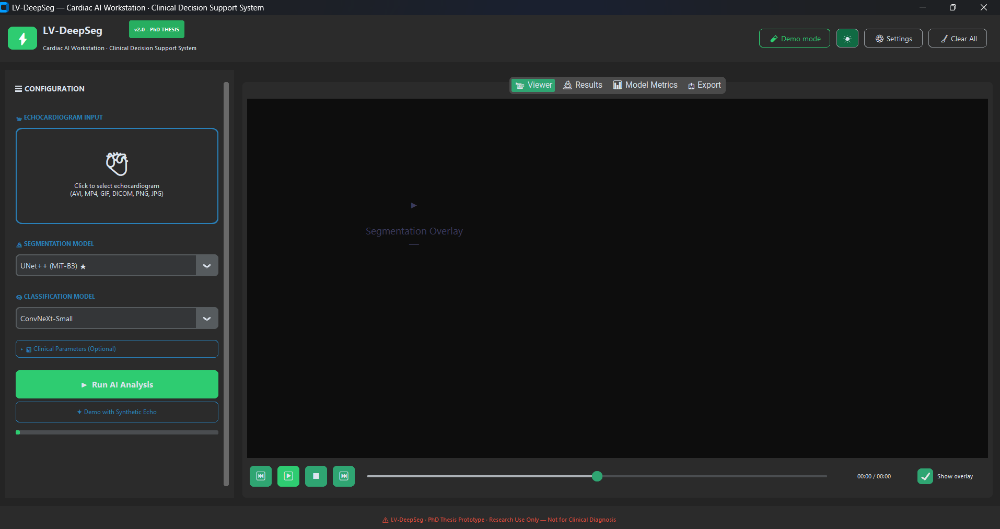
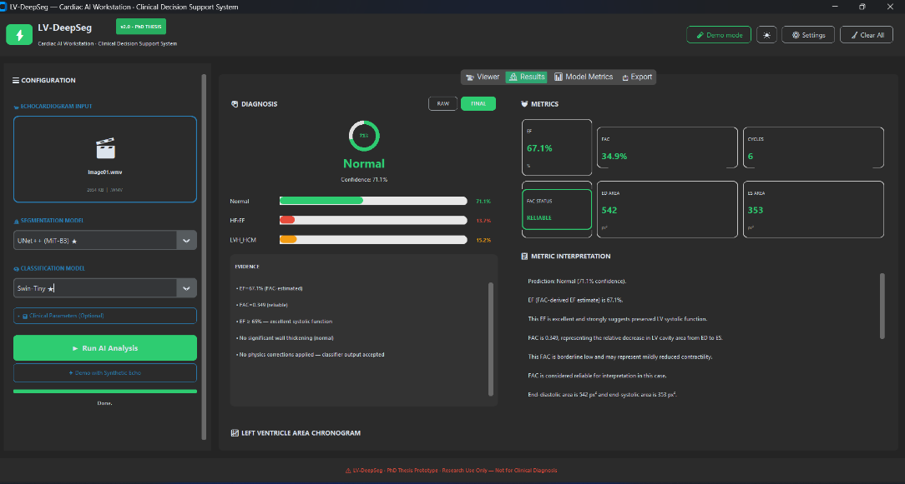
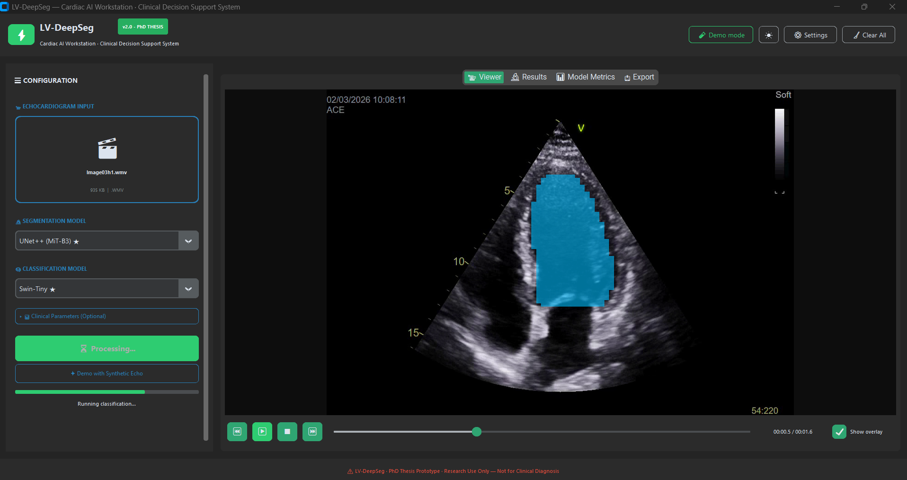
LLM design principle: The LLM does not make diagnostic decisions. It translates the model's classification into professional medical language. The prompt prohibits inventing patient data or prescribing treatment.
Conclusion, Limitations, and Future Directions
Conclusion
- Swin-Tiny: ROC-AUC 0.9827, 92.36% accuracy — 48% fewer missed diagnoses than weakest model
- UNet++: LV Cavity Dice 0.9439, LV Wall Dice 0.8784
- MedSAM failure (Wall Dice 0.0002) proves SAM requires full in-domain retraining
- LV-DeepSeg packages the full pipeline as a clinically usable application
Limitations
- Limited scanner diversity in combined datasets
- Inter-observer variability in LV Wall annotation
- Single 2D frame classification — no temporal cardiac cycle
- ImageNet pretraining vs. domain-specific echocardiographic pretraining
Future Directions
- 3D spatiotemporal video analysis
- Full four-chamber scope (LV, RV, LA, RA)
- Tissue Doppler Imaging (TDI) integration
- Prospective clinical validation with cardiologists
Thank You
Questions Welcome